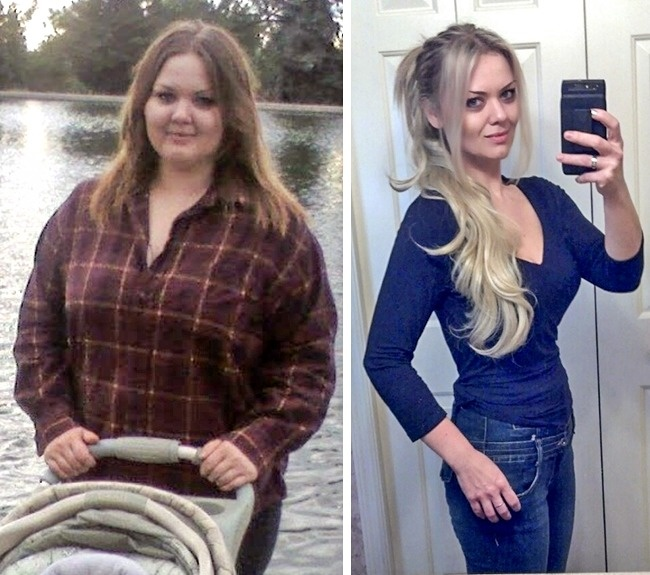
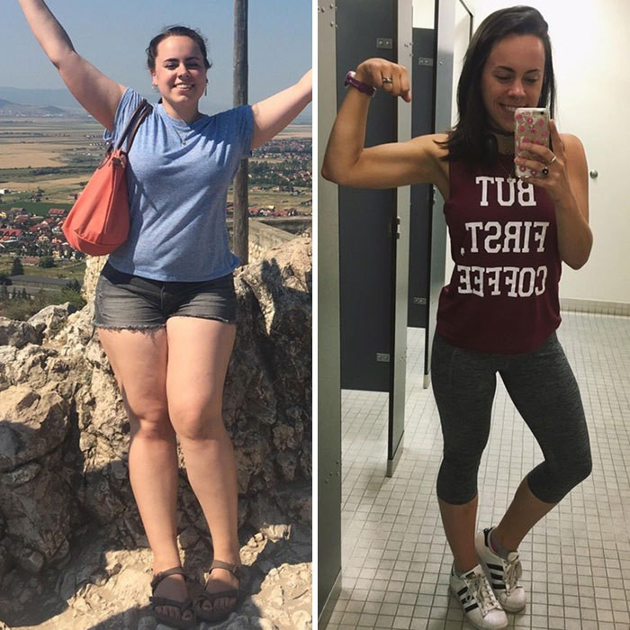
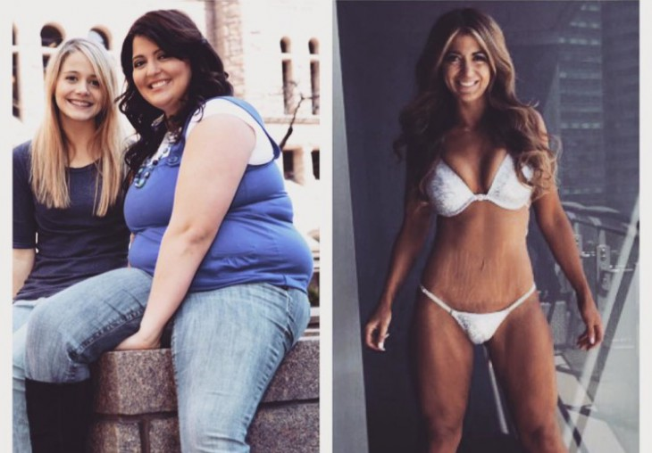

¡Hola a todos! Los que me siguen desde hace mucho tiempo saben que he pasado de ser una oruga gruesa a una mariposa delgada. Es hora de contar más detalles sobre esto (os advierto de inmediato, no me moría de hambre y no daba dineral a los nutricionistas. Me ayudó su Majestad el Caso)
Hasta los 17 años hice ballet. Era delgada como un fideo. Estábamos constantemente hambrientas, íbamos a entrenamientos agotadores y todas sufríamos de avitaminosis. Después de desmayarme de hambre en la clase y sufrir una lesión en la cabeza, ya no podía hacer ballet. Ingresé a la universidad, me hice gerente de ventas con un estilo de vida sedentario. Y sin notarlo gané 25 kilos.
¡Cuántas cosas he probado en mi lucha contra el sobrepeso! Las dietas de proteínas y carbohidratos, el ayuno, iba a las consultas de nutricionistas. Parecía que estaba ganando kilos simplemente respirando cerca de la comida. Me hicieron tests hormonales, todo estaba bien. Pero el peso por alguna razón no se iba.
¿Ya he hablado del Caso? Entonces, una vez fui al estreno de la película y encontré a mi amiga del ballet allí. Se convirtió en una prima bailarina. Es cierto que la encontré cuando ella caminaba con un enorme cubo de palomitas dulces y refrescos en sus manos.
Hablamos un poco, pero yo lo único que veía era su esbelta cintura y un cubo de palomitas. ¿Se permite comer tantas calorías?! Al final, no pude resistirme y le pregunté, ¿por qué ella, una bailarina, come tanto? Entonces me dijo que toda su compañía toma un remedio especial para perder peso y mantenerlo.
descompone rápidamente las calorías, convirtiéndolas en energía. Actúa selectivamente, omitiendo proteínas, vitaminas y carbohidratos lentos. El total la persona recibe la tasa diaria de calorías, y todo lo que era superfluo se convierte inmediatamente en energía. Resulta que una persona pierde peso y se siente más despierta y enérgica.
Inmediatamente quise comprar este . Me di cuenta de que era mi última oportunidad de ser delgada, como cuando era joven. Mi amiga dijo que normalmente las bailarinas sacaban a través de sus conocidos por dinero enorme. Pero ahora el fabricante iba a lanzar el primer lote a la venta con un gran descuento y a través del sitio web oficial.

Me pedí hasta dos cajas por poco dinero. Comencé a tomarlo y, de hecho, la energía me aumentó y el peso bajó. Casi no me limitaba a comer, solo trataba de no comer por la noche. Debido al trabajo, no tuve tiempo de practicar deportes, pero casi dejé de usar el transporte y comencé a caminar más.
¡En un curso, perdí tantos kilos como no pude perder en seis meses de dietas!
Ahora soy tan delgada como una bailarina y solo me tomó tres meses hacerlo. Imagínense, yo pesaba 80 kilos, y ahora peso 55! Por cierto, el descuento para es válido por unos días más, después de lo cual se venderá tres veces más caro que ahora. Recuerden, ¡se puede comprar original solo en el sitio web oficial!
Escriban sus comentarios sobre , ¡calculemos cuántos de nosotros hemos perdido peso!
¡Perdí 20 kg!! Gracias a ti y a !
Mi mujer pesaba entre 90 y 100 kilogramos. La misma historia: ninguna dieta la ayudó. ¡Decidí probarlo, pedí para ella y después de un curso no creía en mis ojos! ¡María era como cuando éramos jóvenes! Han pasado seis meses, el peso no aumenta, y mi mujer comenzó a sentirse mucho mejor
Mi hija trabaja como modelo. Dice que sabe de desde hace mucho tiempo. No solo las bailarinas, sino también las modelos con su ayuda pierden peso.
¡Y yo también perdí peso! 15 kilos!
Ahora puedo ponerme las minis y pantalones cortos! No lo creeríais, pero ahora tengo 40 años y estoy empezando a vivir... Es bueno que haya aprendido sobre , mejor tarde que nunca
¡12 kilos desaparecieron! Chicos, cuidado, no estoy casada todavía.
No podía quedar embarazada por la obesidad. Ahora tomé el curso de , perdí 14 kg. Y ahora la feliz noticia: ¡estoy embarazada!
¡Perdí peso y me pidió un matrimonio un hombre con el que estaba saliendo durante varios años! Ahora soy la novia, ostia!
Puedo llevar literalmente a mi esposa en mis brazos! Es ligera ahora como una pluma. ¡Aconsejo a todos los esposos que compren a sus medias naranjas y que sean felices!
Me parece que ya no se puede medir con precisión el número de personas que han perdido peso. Probablemente ya somos más de mil.
